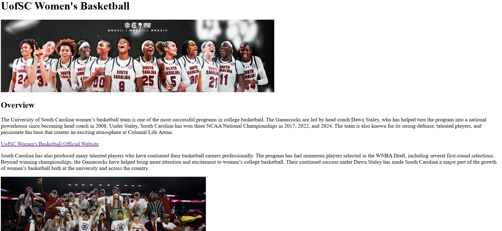
Assignment 1: Basic HTML
I created a webpage about the University of South Carolina women's basketball team. This assignment helped me practice using HTML elements, links, images, and a table.
This portfolio contains my web development assignments and projects from CSCE 242. Each page shows the HTML and CSS skills I have been practicing throughout the semester.
View My GitHub Repository
I created a webpage about the University of South Carolina women's basketball team. This assignment helped me practice using HTML elements, links, images, and a table.
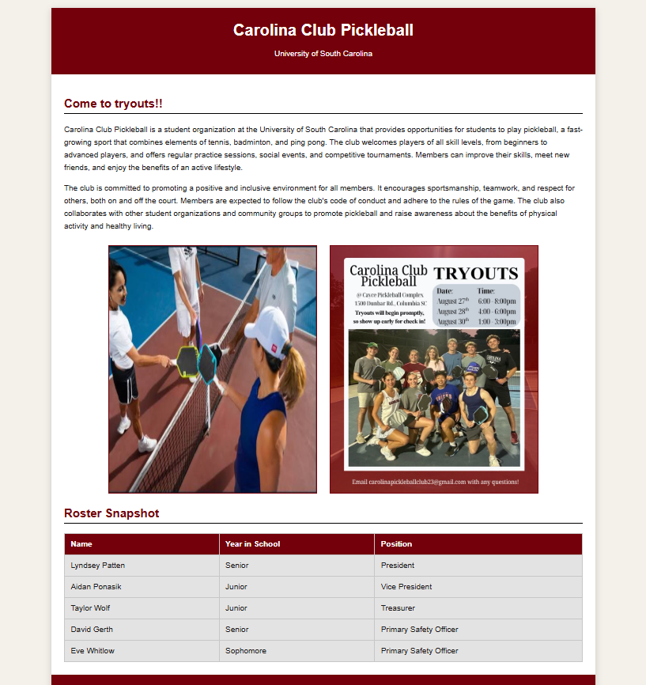
I designed a Carolina Club Pickleball webpage and used CSS to add colors, spacing, navigation styles, and a background image.
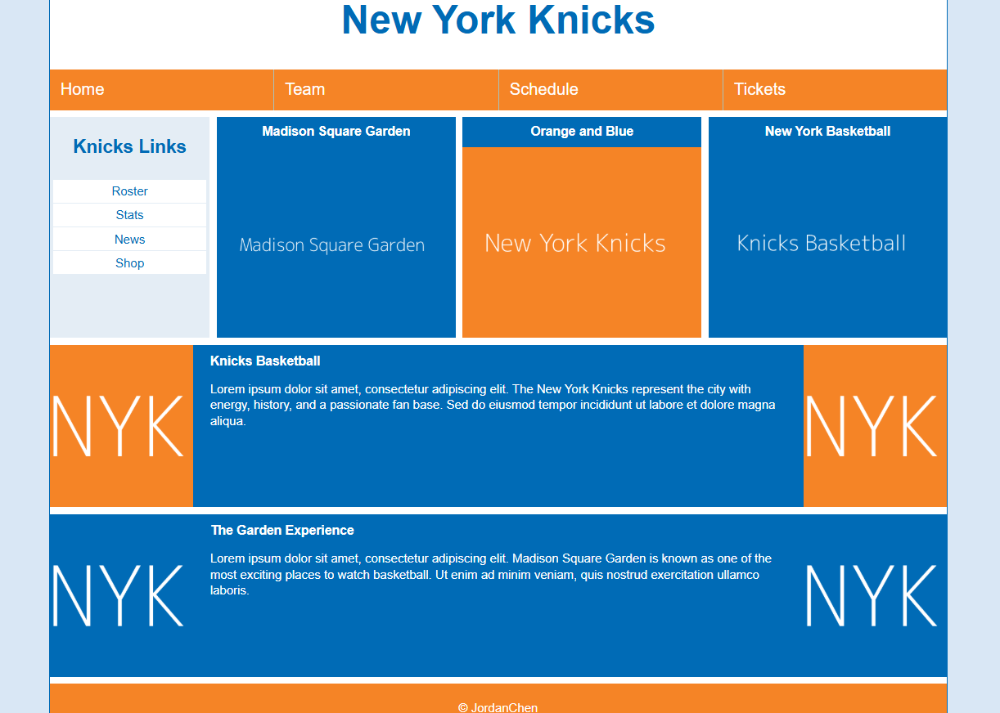
I built a responsive New York Knicks webpage using Flexbox. The layout changes from columns on a large screen to one column on a smaller screen.
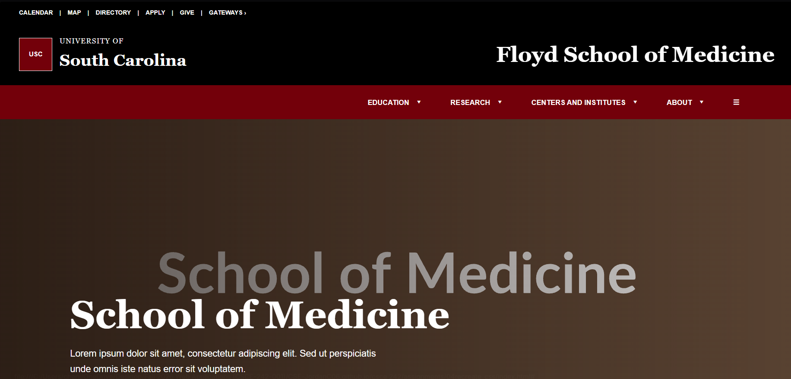
I recreated the Floyd School of Medicine webpage using HTML and CSS. I used flexbox for the navigation, page sections, and footer layout.
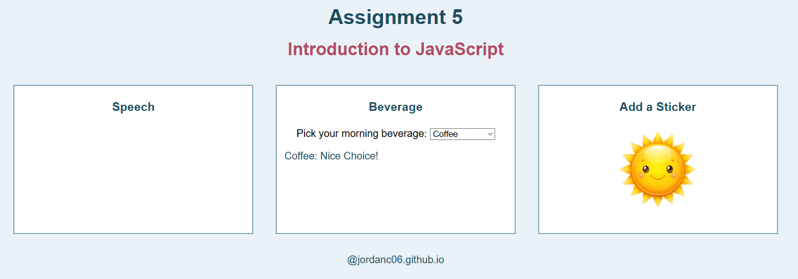
I created an interactive webpage using JavaScript. Users can display a speech bubble, select a morning beverage, and add an emoji sticker by clicking the sun image.
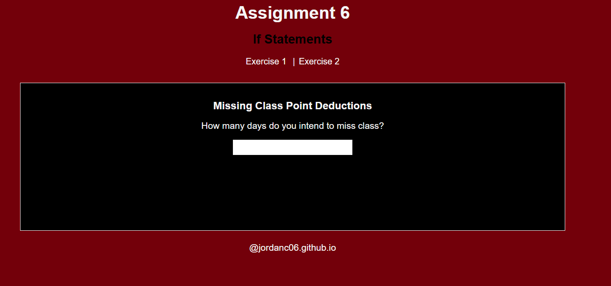
This assignment uses JavaScript if statements to show different content when the user selects an option.
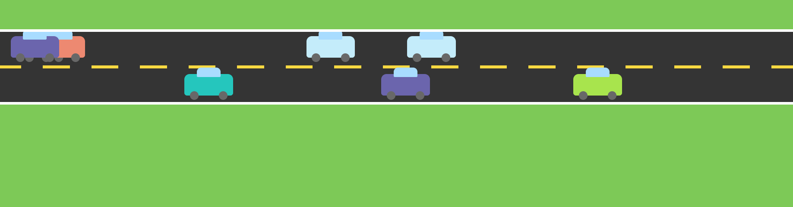
This assignment uses a loop to create cars in random positions on a CSS-art road.
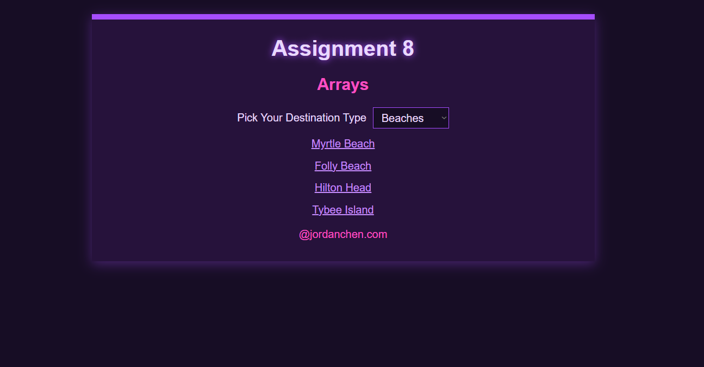
This assignment uses associative arrays to display destination links and live Google Maps.
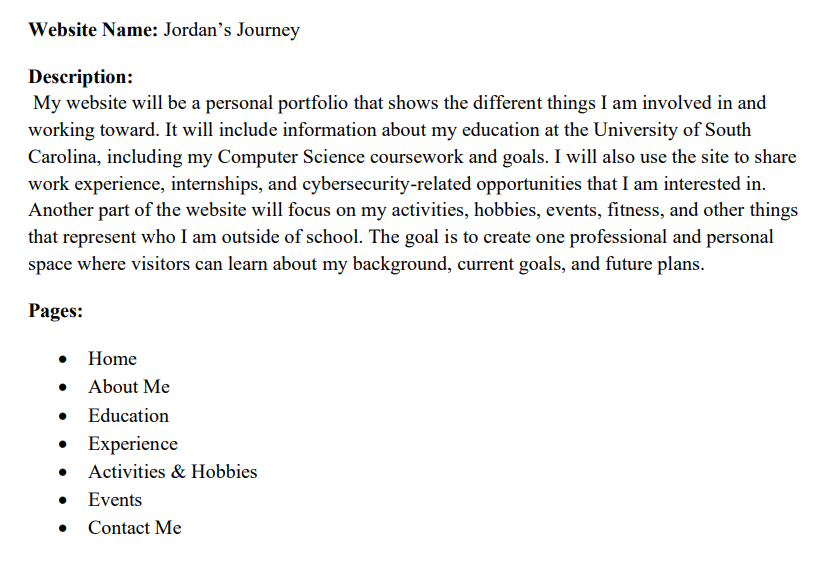
For my course project, I am creating a personal portfolio website that highlights my education, work experience, activities, hobbies, and future goals. The proposal explains the purpose of the site, its planned pages, and the features I want to include in the final website.
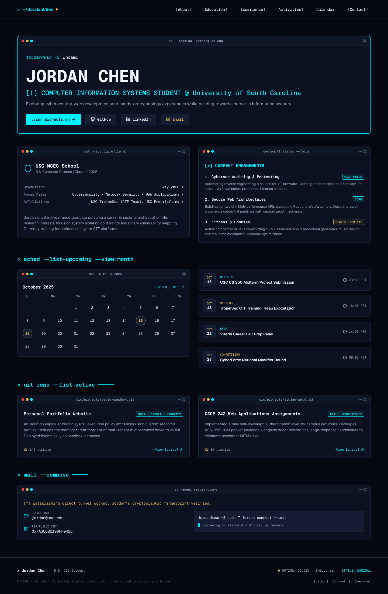
This wireframe shows the planned home page for Jordan's Journey. It uses a cyber-security-inspired layout with a navigation bar, introduction, current focus cards, calendar, and contact section.

These completed Figma wireframes show all planned pages for Jordan's Journey, including education, experience, activities, calendar, contact information, and project details.
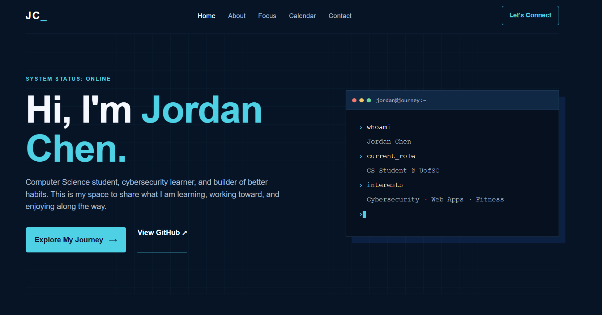
This is the coded home page for Jordan's Journey. I used HTML and CSS to turn my wireframe into a responsive personal website with a terminal-inspired design and cyber-security theme.